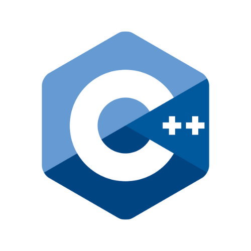

Featured Skills
CSS
JavaScript
C++
Educational Background
1st Year - Present
College (BSIT)
As a second-year IT student, I am polishing my skills in web development (HTML, CSS, JavaScript), networking, and programming (CC-103, Java). Among my current activities are the development of useful websites and tiny apps that address current challenges. These encounters have improved my technical expertise and collaborative abilities, developing me for upcoming IT problems.
2021 - 2023
Senior High School (STEM)
I decided to pursue the STEM strand in senior high school in order to expand my knowledge of technical subjects like calculus, physics, and empowerment technology. I became more prepared to deal with the technical responsibilities of being an IT student because to these subjects.
2017 - 2021
Junior High School
I continued to do well as students, mostly in science and math, and this was when my passion in technology began.
2010 - 2017
Grade School
I completed my elementary education and built a solid academic foundation, especially in science and mathematics.